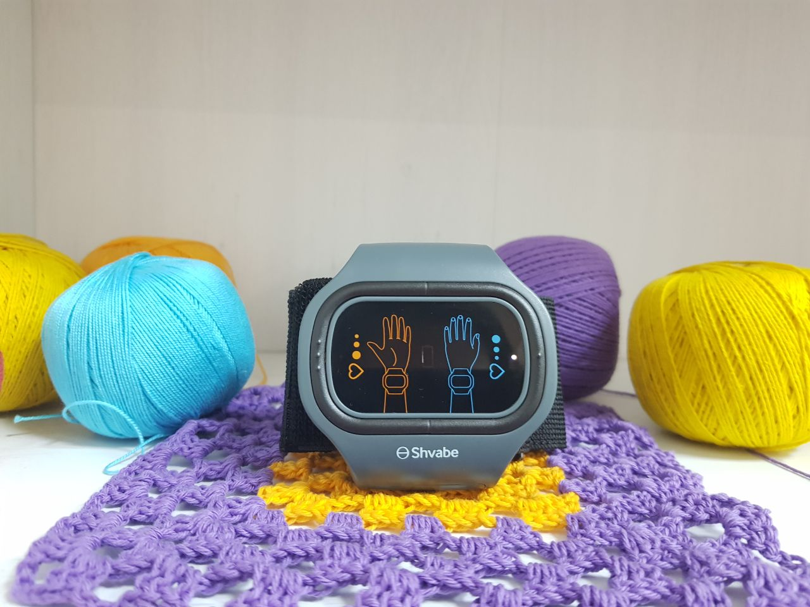

Unterstützung bei Hypertonie


Andrea Krüger 66 Jahre
Hypertonie? Ich spreche von der richtigen Druckkorrektur.
“So ein hoher Blutdruck ist lebensbedrohlich“ – hat mir mein Arzt ständig gesagt. 200/150 – 250/180 – in etwa diesem Bereich befand sich mein Blutdruck. Ich ließ mich lange und beharrlich behandeln und habe es geschafft den Blutdruck auf 130/80 zu reduzieren! Möchten Sie wissen, wie? Dann lesen Sie meinen Artikel durch.

Hier erstmals die Vorgeschichte. Hallo, mein Name ist Andrea und ich bin 66 Jahre alt und leide schon 15 Jahre lang an Bluthochdruck. Habe unterschiedliche Mittel ausprobiert, um den Blutdruck zu reduzieren. Ein klassischer Fall. Arzttermine haben überhaupt nichts gebracht. Untersuchungen und Verschreibungen. Habe 3 mal am Tag Medikamente eingenommen. Nach einiger Zeit ist mir aber wieder schlecht geworden. Im Krankenhaus gab es wieder Untersuchungen und Verschreibungen neuer Medikamente. Und das immer wieder. Einige Medikamente wurden wieder ausgeschlossen, bei anderen wurde die Dosierung verdreifacht. Einmal bin ich sogar fast gestorben, weil ich eine Einnahme verpasst habe. Mir ist so schlecht geworden, dass ich nicht einmal meine Augen öffnen konnte. Und morgens war der Blutdruck IMMER sehr hoch gewesen. Eines Tages ist mir klar geworden, dass es nicht lange so weiter gehen kann.
Ich begann nach alternativen Methoden zu suchen, es gab aber nicht viele davon. Eine davon hat fast meine Gesundheit ruiniert. Gut, dass meine Nachbarin noch rechtzeitig den Krankenwagen gerufen hat. Wäre sonst die Treppe runtergefallen und mir wahrscheinlich alle Knochen gebrochen. Sie hat mich bis zu meiner Wohnung begleitet. Sie ist wie mein zweites Schutzengel. Es stellte sich sich heraus, dass sie als Assistentin bei einem Unternehmen arbeitet, das Medizingeräte herstellt. Am nächsten Tag brachte sie mir АВР-051 mit.

Ich schaute mich dieses wundervolle Armband einige Minuten lang an und dachte, dass es ein Witz ist. Nicole hat mir aber versichert, dass ich mich in nur einer Woche viel besser fühlen werde. Es war ein neuer Blutdruckkorrektor. Hätte so eins selbst nie gekauft, habe aber dennoch beschlossen es auszuprobieren.
Es sieht wie ein Handtonometer aus und verfügt über 2 Programme. Das erste ist für Personen mit Bluthochdruck und das zweite für Personen mit niedrigem Blutdruck. Die Bedienung ist recht einfach. Man zieht es einfach auf die linke Hand an und schaltet es ein. Je nach ausgewähltem Programm beginnt der Blutdruckkorrektor, spezielle elektrische Impulse zu senden, die den Gefäßtonus wieder normalisieren.
Die Wirkung habe ich natürlich nicht sofort verspürt (das hängt wahrscheinlich von den Eigenschaften des Körpers ab), habe es aber dennoch weiterhin verwendet. Habe es 2-3 mal am Tag paar Minuten lang getragen. Darüber hinaus verfügt es über einen Timer, sodass es am Ende selbstständig aus geht.
Nach nur einer Woche begann sich der Blutdruck zu normalisieren. Ich dachte zunächst, dass mein Blutdruckmessgerät spinnt und habe mir ein neues gekauft. Doch auch das neue Blutdruckmessgerät zeigte anstatt 230/170, 170/90 an! Das war ein großer Fortschritt für mich. Der Blutdruck hat mich nicht mehr so gestört, wie früher. Auch morgens hatte ich nicht mehr so einen hohen Blutdruck. Auch der Schlaf und mein Allgemeinzustand hat sich verbessert. Nach zwei Wochen hatte ich überhaupt keine Schmerzen mehr.
Ich hatte auch nicht mehr das Gefühl, dass meine Augen kurz davor zu platzen sind und mein Blutdruckmessgerät zeigte 135/75 an!

Ich bin weiterhin zum Arzt gegangen, der plötzlich feststellte, dass sich mein Allgemeinzustand stark verbesserte. Zwei Monate später ließ ich mich wieder untersuchen. Mein Arzt stellte einen positiven Trend fest und schlug vor die Dosierung meiner Medikamente zu reduzieren. Ich hatte große Angst, aber es stellte sich heraus, dass es überhaupt keine Grund dafür gab. Ich fühlte mich nicht schlechter, der Blutdruckkorrektor hat mir wirklich geholfen.
Als ich das Armband mehrmals am Tag anzog, war seine Wirkung noch besser zu spüren. Darüber hinaus habe ich mich nicht nur besser gefühlt, sondern hatte auch noch viel mehr Kraft. Ich fühlte mich nicht mehr so träge und wetterfühlig. Der Blutdruckkorrektor verbesserte nicht nur meinen physischen, sondern auch meinen emotionalen Zustand. Ich habe das Gefühl, dass ich um 15 Jahre jünger geworden bin, da mich zum ersten Mal in dieser zeit nichts stört.

Bin meiner Nachbarin so dankbar, dass sie mir die Welt nützlicher Technologien geöffnet hat. Das ist wirklich sehr cool. In nur wenigen Jahren erreicht unsere Medizin bereits ein Niveau, dass man Krankheiten auch ohne Medikamente behandeln wird. Genauso wie bei mir mit dem Blutdruckkorrektor АВР-051. Empfehle es allen, die unter Blutdruckproblemen leiden, es auszuprobieren. Erwerben können Sie АВР-051 auf der offiziellen Webseite. Ist recht bequem.


-

Gesundheitsgeschichte
Gemeinschaft
523 Teilnehmer
8 Beiträge pro Monat -

Gesunde Krankenschwester, gesunde Nation
Gemeinschaft
15K Teilnehmer
8 Beiträge pro Woche -

GESUNDES LEBEN
Gemeinschaft
9.3K Teilnehmer
10 Beiträge am Tag -

Revolution des gesunden Nervensystems
Gemeinschaft
21K Teilnehmer
4 Beiträge am Tag -

Glücklich und gesund 24/7
Gemeinschaft
3.2K Teilnehmer
10 Beiträge am Tag
Sophie Meier
2Vielen Dank für einen ausgezeichneten Artikel !!! Wird einigen Hypertonikern sicherlich helfen die Krankheit loszuwerden. Ich leide schon 20 Jahre lang an hohem Blutdruck und habe schon alle möglichen Medikamente eingenommen. Werde es mir auch bestellen, vielleicht wird es mir ja auch helfen.
Elisabeth Köhler
Mir wurde auch vor kurzem Bluthochdruck diagnostiziert. Habe ich anscheinend von meiner Mutter geerbt. Werde jetzt noch untersucht, hoffe, dass es nicht so schlimm ist. Das Armband habe ich mir noch gestern bestellt, hoffe, dass ich nicht jahrelang mich behandeln werden muss.
Thomas Vogel
Ich habe auch seit 20 Jahren den Bluthochdruck. Ohne Medikamente wäre ich wahrscheinlich schon gestorben((( Das Schlimmste ist aber, dass die meisten Medikamente nach einiger Zeit einfach aufhören zu wirken und man sich andere und meist teurere Medikamente kaufen muss. Feuer mich sehr, dass ich auf diesen Blutdruckkorrektor gestoßen bin. Mit ihm habe ich mich angefangen viel besser zu fühlen und die ständigen Kopfschmerzen sind endlich verschwunden.
Mia Jung
ich leide schon mein ganzes Leben lang an dieser Krankheit! Ließ mich bei den besten Ärzten behandeln, aber alles ohne Erfolg. Dabei habe ich dafür so viel Geld ausgegeben!!!!!!!!! Glaube an nichts mehr
Ursula Keller
Finde schon oft nützliche Informationen auf dieser Seite. Danke für die interessanten Artikel.
Dorothea Hartmann
3Mir wurde der Bluthochdruck vor 2 Jahren diagnostiziert. Die Symptome waren genau dieselben, wie in diesem Artikel. Ich würde auch allen empfehlen die Krankheit nicht zu verschleppen. Leider gab es damals noch nicht so ein Gerät, habe mir es erst jetzt bestellt und fühle mich damit schon wesentlich besser.
Sara Frank
Das ist viel besser als eine Fitnessuhr. Habe es mir, meiner Frau und meinen Eltern bestellt.
Michael Beck
Es dreht sich alles um den Lebensstil. Man muss sich richtig ernähren, auf das eigene Gewicht achten und regelmäßig zum Arzt gehen. Dann wird es auch keine Bluthochdruck geben. Unsere Gesundheit liegt in unseren Händen.
Nicole Raab
5Unsere Gesundheit liegt wirklich in unseren Hände. Habe das Armband angezogen und das wars, habe überhaupt keine Probleme mit dem Blutdruck mehr. Das ist eine super Erfindung.
Viktoria Albrecht
Ich habe zum Beispiel keine zeit zum Arzt zu gehen, da ich viel arbeiten muss. Nur wenige haben zeit dafür! Gut, dass man mittlerweile die Möglichkeit hat den eigenen Blutdruck zu korrigieren, ohne den eigenen Arbeitsplatz zu verlassen. Das Gerät hilft sehr gut den Blutdruck zu normalisieren.
Corina Behr
Ich hatte kürzlich einen Schlaganfall. Auch in meinem Fall war der Bluthochdruck, den ich schon 15 Jahre lang habe, Schuld daran. Zum Glück habe ich es überlebt. Auf Anraten meines Arztes begann ich einen Blutdruckkorrektor zu tragen. Er ist viel effektiver als alle möglichen Medikamente. Der Blutdruck hat sich stabilisiert und das allgemeine Wohlbefinden normalisiert. Bin äußerst zufrieden.